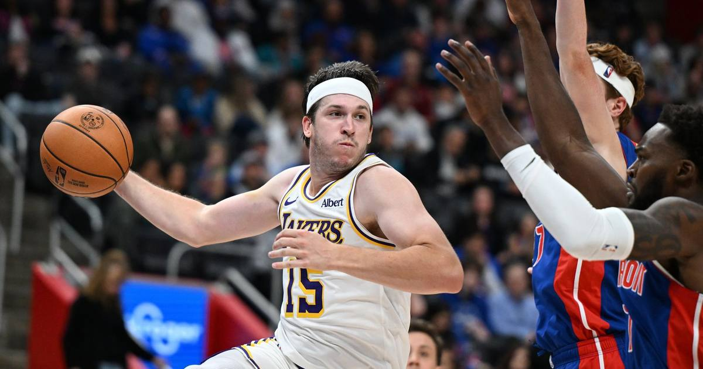

Austin Reaves drops season-high 43 as Luka-less Lakers hold off Pistons
With Luka Doncic sidelined by lower-back tightness, Austin Reaves poured in a season-high 43 points — including a dagger three in the final minute — as the Lakers beat the Pistons 121-116 in Detroit for their fifth straight win. It was his fifth career 40-point game, tying Wilt Chamberlain on the Lakers' all-time list.

Disclosure: this post contains affiliate links. I earn a commission on qualifying purchases.
What happened
The Los Angeles Lakers built a 26-point lead, nearly gave it all away, and then watched Austin Reaves take it back. Reaves scored a season-high 43 points as the Lakers beat the Detroit Pistons 121-116 on Sunday night at Little Caesars Arena, improving to 9-2 with their fifth straight win — all of it without Luka Doncic, who sat out with lower-back tightness.
Reaves went 14-of-27 from the field, 4-of-6 from three, and a perfect 11-of-11 at the free-throw line, adding five rebounds and four assists in 37 minutes with just one turnover. The Lakers led 38-14 after one quarter and 61-48 at halftime. Detroit cut the lead to one three times in the fourth quarter. Then Reaves buried an off-balance three-pointer with about 45 seconds left, waved toward the courtside seats, and closed the game out at the line.
The Luka-less pattern
This is becoming a thing with Reaves, and the numbers are almost funny. All five of his career 40-point games have come with the Lakers missing either LeBron James or Doncic. His career high is 51, set October 26, 2025, against the Sacramento Kings — also with Doncic unavailable. His other 40-point nights: 45 against the Pacers in February 2025, and now Sunday's 43.
Sunday's game gave him a new line on the franchise's history page, too. The 43 was his fifth career 40-point game, tying Wilt Chamberlain for 12th place on the Lakers' regular-season list. Magic Johnson sits sixth with six such games. Reaves is an undrafted guard in his sixth season, and he is now tied with Wilt.
Doncic, the NBA's leading scorer at 40.1 points per game, missed his second game of the season. The Lakers are 2-0 without him. He is also out for Monday night's game in Atlanta, the second night of the back-to-back, which means Reaves gets the keys again against a Hawks team that has won four straight.
The game itself
The Lakers came out like a team that had been waiting to prove a point. They forced eight Detroit turnovers in the first quarter and scored 17 points off them, with Quentin Grimes — starting in Doncic's place — scoring 10 of his 12 points in the opening frame. A Kessler basket at the start of the second quarter made it 40-14, the Lakers' biggest lead of the night.
Detroit did not fold. Daniss Jenkins, a reserve, scored 22 of his career-high 31 points in the first half, including a buzzer-beating three that cut it to 61-48. Kevin Huerter added 24. Cade Cunningham had 14 points but did not make a field goal in the first half, and Duncan Robinson scored 12. The Pistons, the league's top-ranked defense coming in, shot 19-of-48 from three and kept coming — an 11-0 surge in the final 2:04 of the third cut a 13-point deficit to three.
Reaves had words with a courtside fan midway through the game, then spent the rest of the night answering him. He scored 13 in the third quarter to keep the Lakers afloat, then hit the dagger three with 44.5 seconds left and made sure to wave goodbye to the same spectator on his way back down the floor.
The supporting cast held up its end. Ziaire Williams and Collin Sexton each scored 17 off the bench. Walker Kessler had 12 points, 16 rebounds, four assists, and three blocks. The Lakers shot exactly half of their 84 shots. Detroit lost back-to-back games for the first time this season.
What it means
The Lakers are 9-2 and alone in first place in the West, and they just won a road game against the league's best defense without the player averaging 40 a night. That is the whole story. Reaves is not a fill-in anymore — he is a second star who happens to play his best basketball when the first star is in street clothes. The question now is whether the Lakers can keep winning while Doncic's back calms down, and whether Reaves can do this again on Monday in Atlanta, on the second night of a back-to-back, against a Hawks team that just got Jalen Johnson back.
If Sunday was the answer, Monday is the test.
The box score
Final score: Lakers 121, Pistons 116
Reaves: 43 pts (season-high), 14-27 FG, 4-6 3PT, 11-11 FT, 5 reb, 4 ast
Jenkins (DET): 31 pts (career-high)
Huerter (DET): 24 pts
Kessler: 12 pts, 16 reb, 3 blk
Lakers: 9-2, five straight wins, 2-0 without Doncic
Sources
• Austin Reaves scores 43 with Luka Doncic out as Lakers at Detroit (Reuters)
• Austin Reaves explodes for 43 points, leading Luka-less Lakers to win over Pistons (New York Post)
• Lakers ride Austin Reaves' 43 to fifth straight win with Luka Doncic out (The Sporting Tribune)
• Austin Reaves scores 43 as Lakers beat Pistons 121-116 (NBC Sports)
• Austin Reaves Scores 43 as Los Angeles Lakers Beat Detroit Pistons (Side Eye Sports)
Gear up: Fanatics